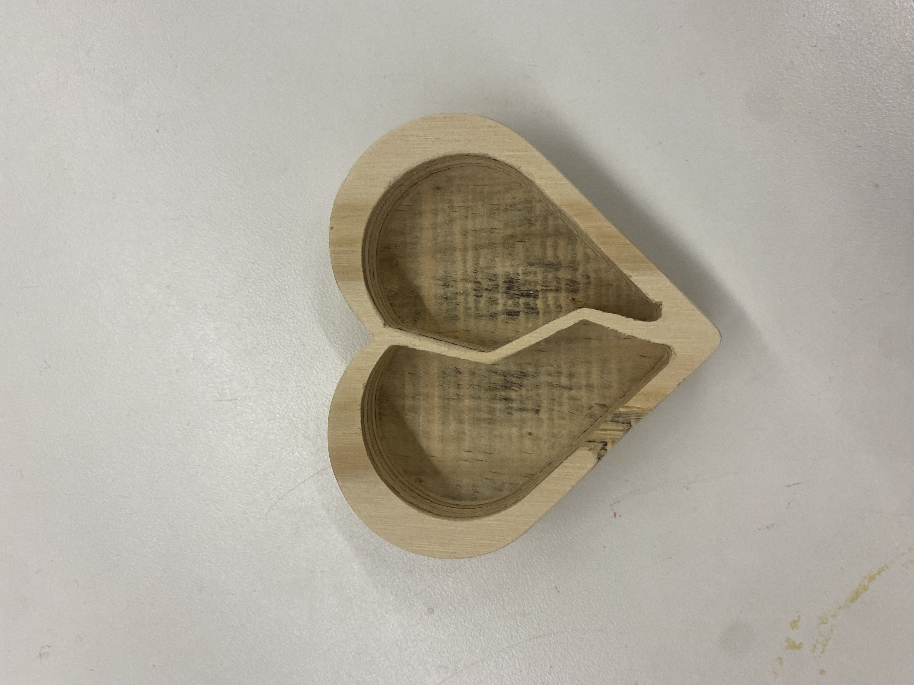
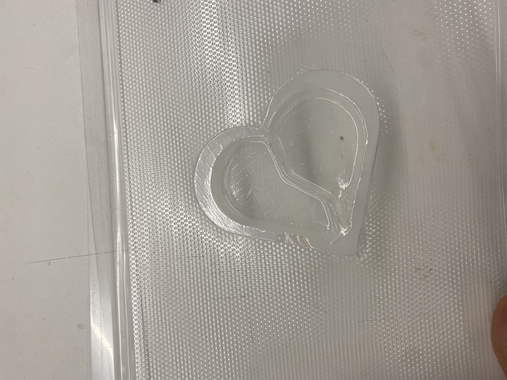

<div class="textcontainer">
<p class="margin"> </p>
<h3>Week 8: CNC Milling</h3>
<h4>Assignment: Make Something With CNC</h4>
<p>This week, Gardenia and I partnered up to design a Halloweed inspired jewelwery plate--after all, what oculd be scarier than a broken heart!
We first created this design via a sketch in Fusion 360. it was honestly a little bit tricky to get the heart shape perfect, and forced me to learn how to better use
the trim tool, the move/copy tool, and the scale tool. After finishing the sketch and exporting it, Aspire kept perceiving an open line segment as closed which was preventing me from joining everything together
and making the pocket cut. To resolve this, with Bobby's help, we ultimately ended up extruding the outer heart of my sketch and projecting that to get a new/cleaner sketch, which worked perfectly.
And look! Such an adorable result :D
<p></p>
</p>
<h4>Assignment: Post-Process Your Design</h4>
<p>After milling, we sanded down the edges of the jewelwery plate to get rid of any splinters and make it smooth to the touch. Inspired by Kassia's chocolates and the relatively pocket-shaped size of our heart, we decided on vaccuum forming
and created the small plastic mold attatched below. It's also adorable :D </p>
<p></p>
</div>